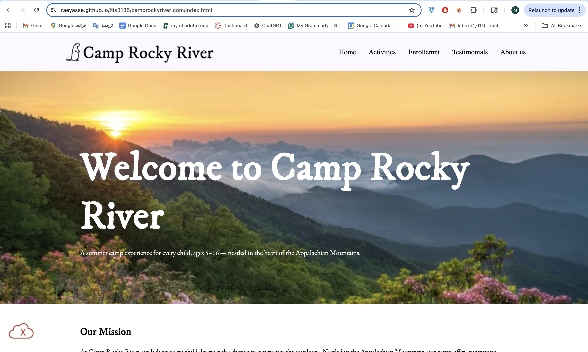

Peer Review 1
Assefa, Raey

- The Camp Rocky River client project includes at least five pages, such as Home, About Us, Activities, Enrollment, and Testimonials, so it meets the minimum multi-page website requirement.
- The navigation is clear and consistent across the pages. The menu placement is easy to follow and helps users move through the site smoothly.
- The website design fits the purpose of the project well. The large outdoor hero image on the home page matches the summer camp theme and creates a strong first impression.
- The homepage includes meaningful content such as the mission and highlights, which helps explain the purpose of the camp clearly.
- The About Us page provides strong and detailed information about the camp, including values, staff, and safety policies, which makes the site feel realistic and complete.
- The Activities page supports the site well by describing different camp experiences in a clear and organized way.
- The Enrollment page is a strong feature because it includes camp sessions, pricing, and a contact form, making the site more interactive and useful.
- The project is well organized with separate folders for styles, scripts, images, and components, which follows good web development practices.
- One improvement is the page titles. Some pages use generic titles like “About Us” or “Activities.” It would be better to include the brand name, such as “Camp Rocky River | About Us.”
- Another suggestion is to confirm proper heading structure. The main content uses h2 headings, so it would be good to ensure an h1 exists for the site name in the header on every page.
- The HTML and CSS validation shows errors and warnings. These should be fixed to improve code quality and meet assignment requirements.
- Overall, this is a strong and well-developed project with clear structure, relevant content, and good design. With small improvements to validation and consistency, it would fully meet all expectations.